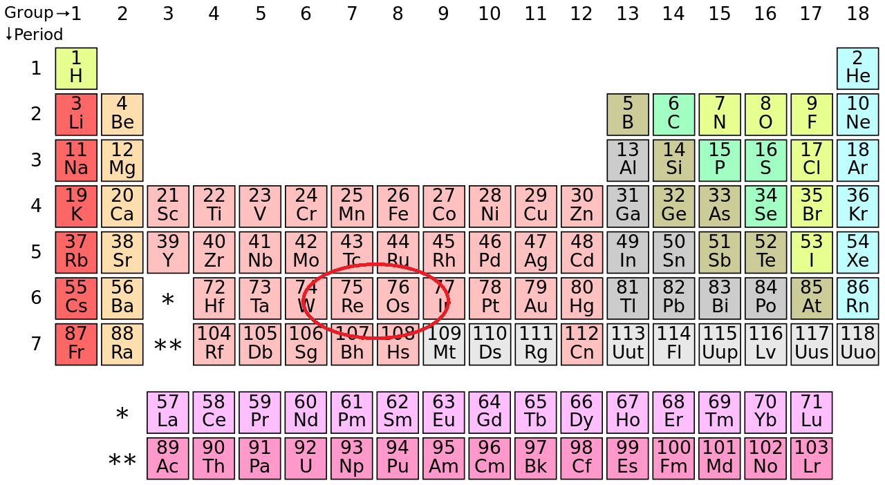
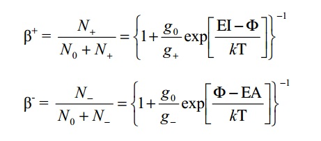
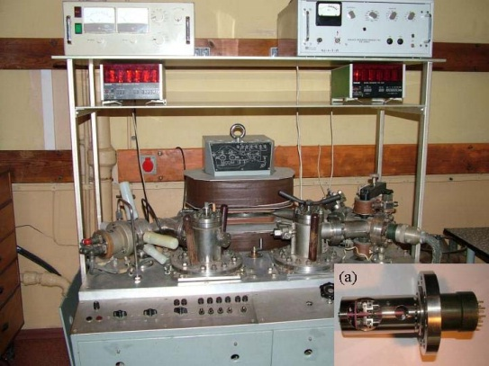
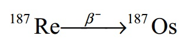
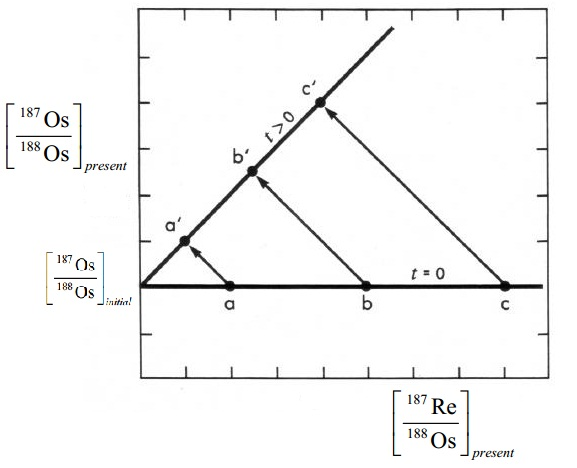
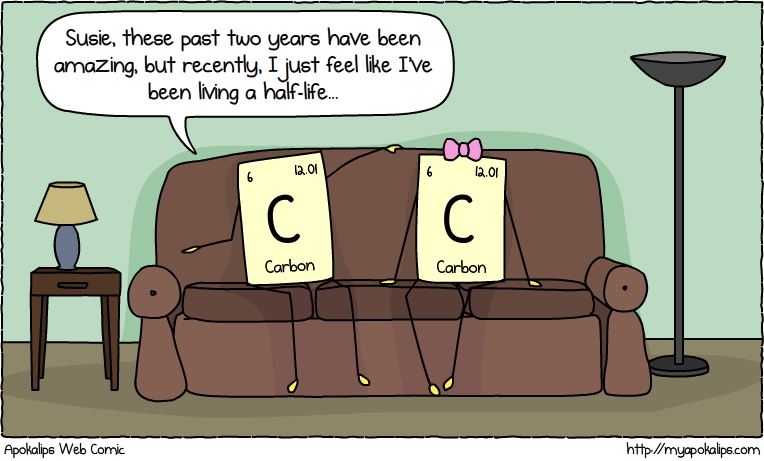

Rhenium-Osmium Systematics
Measuring the trillionths?
Shaumik Daityari / @ds_mik
http://sdaityari.github.io/rhenium.osmium.systematics
Rhenium
- Symbol "Re"
- Atomic number 75
- Heavy (specific gravity - 21.02)
- Silvery-White
- Alloys used in filaments of instruments, catalysts in chemical and petroleum industries
- Average Concentration of 1 ppb
- Oxidation states from -1 to +7
- Two stable isotopes (185, 187)
- One mineral - Rheniite (Rhenium Sulfide)
Rheniite, Source: Wikipedia
{kind=link}
Osmium
- Symbol "Os"
- Atomic number 76
- Hard, Brittle
- Heavy (specific gravity - 22.59)
- Bluish-White
- Alloys are highly durable and extremely hard
- Fountain pen tips and electrical contacts
- Oxidation states from -2 to +8
- Seven naturally occurring isotopes(184, 186, 187, 188, 189, 190, 192)
Where are they located?
 Source: Wikipedia.svg/1280px-Periodic_table_(polyatomic).svg.png){kind=link}
Rhenium and Osmium
- Practically sister elements
- Rare only in Earth's crust
- Siderophiles - Iron loving
- Dissolved in molten Iron - present in the core
- Rhenium is also a chalcophile - forms sulfides (Rheniite)
- Minor quantities left in crust and mantle - less than 1 ppb
- Instruments of high precision (NTIMS)
Sample Preparation
- Osmium and Rhenium separated
- Form negatively charged oxides
- ReO3-, ReO4-
- OsO3-, OsO4-
Thermal Ionization Mass Spectrometry
- Also called surface ionization
- Material coated on a heated metal surface
- Material evaporates into ions due to the heat
- Negative or Positive depends on the charge of the ions
- Governed by the Saha-Langmuir equation
Saha Langmuir Equation
- β - Ionization Efficiency
- EI - First Ionization Potential
- EA - Electron Affinity
- g - partition functions*
- Φ - Work function of filament
- k - Boltzmann constant
A Mass Spectrometer
Credits: DĄBEK and HALAS (2007)
Challenges
- Rhenium and Osmium are very rare in the crust and mantle
- First dated using NTIMS in 1989, precise measurements in 1991
- Debate on the Re-Os decay constant
The Rhenium-Osmium Clock
- Rhenium is very rare outside the core
- 187Rhenium is slightly radioactive
- 187Rhenium converts into 187Osmium when a neutron decays to a proton (β decay)
- Half life - 42.3 billion years (~ 10 x age of Earth)
- Osmium is compatible (no preference in absence of iron)
- Rhenium is highly incompatible
- Any rock that undergoes melting in the mantle stops its Re-Os clock
The Rhenium Osmium systematics

The Isochron
Applications
Extraterrestrial Occurrence (1) - Crater size
- Meteorites add osmium to the sedimentary record
- Meteorite osmium hasn't gone through 4 billion years of mantle evolution
- Larger pulses of osmium in the record of seafloor sediments point to asteroid impacts
- Could be used to find out how big the crater was
- Paquay et al (2007)
- Challenge - determine what fraction vaporized and what fraction dissolved in seawater
- Within 50% variation of known impact sizes
Source: Paquay, 2007
Extraterrestrial Occurrence (2) - Age of meteorite cores
- Meteorite cores contain iron
- Re and Os are siderophiles
- Age of the core can be determined
- Shen (1996)
Source: Shen, 1996
Absolute Dating of Mineralization Events
- Rb-Sr, Ar-Ar, Sm-Nd, U-Pb dating can not be directly performed on sulfides
- Proxies like gangue, wall rock or host rocks are dated
- Rhenium-osmium dating performed on molybdenite, a rhenium-enriched sulfide
- Suzuki in 1996, Ruiz in 1999, Selby in 2000s
Source: Selby, 2014
Absolute Dating of Mineralization Events (cotd..)
- U-Pb dates give similar age to that of Re-Os dates, Ar-Ar dates are 4-7% younger
- Molybdenite and Gold deposition happened nearly at the same time as the crystallization of the pluton in Fort Knox, Alaska
- Perhaps because Ar-Ar blocking temperature is lower
- More studies about interaction of molybdenite with hydrothermal fluids being done
References
- Dąbek, Józef, and Stanislaw Halas. "PHYSICAL FOUNDATIONS OF RHENIUM-OSMIUM METHOD–A REVIEW." Geochronometria 27.1 (2007): 23-26.
- Paquay, François S., et al. "Absence of geochemical evidence for an impact event at the Bølling–Allerød/Younger Dryas transition." Proceedings of the National Academy of Sciences 106.51 (2009): 21505-21510.
- Selby, David, et al. "Absolute timing of sulfide and gold mineralization: A comparison of Re-Os molybdenite and Ar-Ar mica methods from the Tintina Gold Belt, Alaska." Geology 30.9 (2002): 791-794.
- Shen, J. J., D. A. Papanastassiou, and G. J. Wasserburg. "Precise Re Os determinations and systematics of iron meteorites." Geochimica et Cosmochimica Acta 60.15 (1996): 2887-2900.
- Walczyk, Thomas, Erhard H. Hebeda, and Klaus G. Heumann. "Osmium isotope ratio measurements by negative thermal ionization mass spectrometry (NTI-MS)." Fresenius' journal of analytical chemistry 341.9 (1991): 537-541.
THE END
Any questions?

Source: APOKALIPS